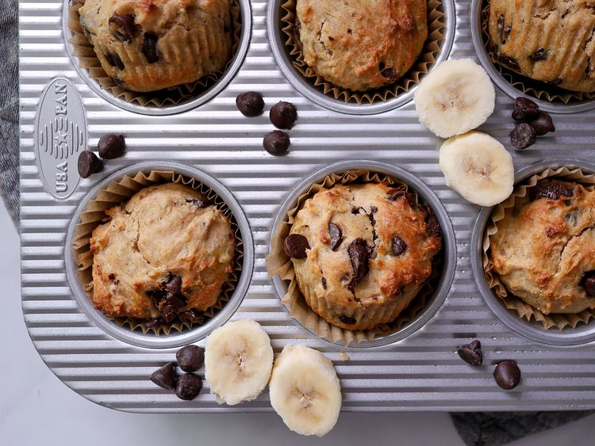

Muffins

Description
Try this banana muffin recipe for muffins that rise beautifully, don't stick, and taste great!
Ingredients
- Cooking spray
- ¾ cup all-purpose flour
- ¾ cup whole wheat flour
- 1 teaspoon baking powder
- 1 teaspoon baking soda
- ½ teaspoon salt
- 4 medium bananas, mashed
- ½ cup white sugar
- ⅓ cup canola oil
- ¼ cup brown sugar
- 1 egg
Steps
- Preheat the oven to 350 degrees F (175 degrees C). Spray 16 standard muffin cups with cooking spray.
- Sift both flours, baking powder, baking soda, and salt together into a large bowl.
- Mix bananas, white sugar, oil, brown sugar, and egg together in a separate large bowl. Fold banana mixture into flour mixture until just incorporated. Scoop batter into the prepared muffin cups.
- Bake in the preheated oven until muffins spring back when lightly tapped in the middle, 14 to 16 minutes.
- Remove from the oven and let cool on a wire rack.